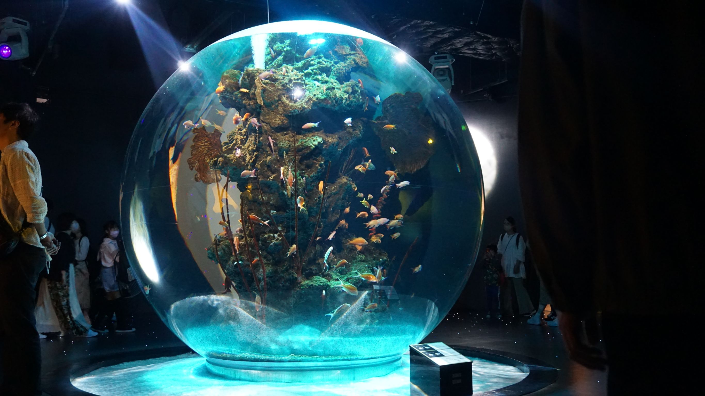
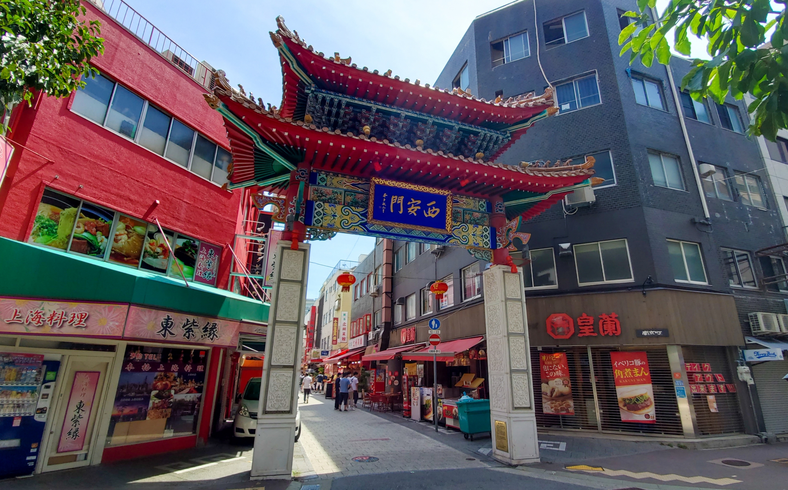
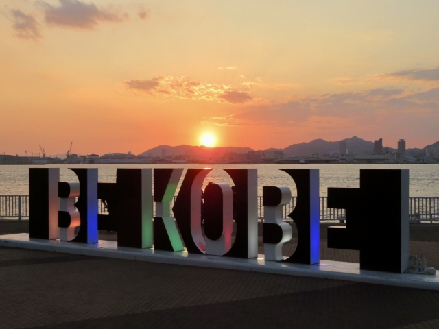
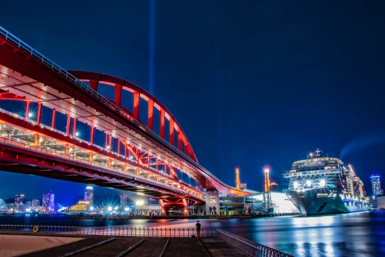

https://atoa-kobe.jp/
兵庫の旅を始めるには、まずはアートと動物の楽しい空間、アトア（átoa）へ足を運びましょう！
ここでは、驚くべきアート作品と可愛らしい動物たちが一緒に暮らしています。
触れ合いながら、心躍るひとときを過ごすことができます。
特に素晴らしいのは、アートと動物が見事にコラボレーションしている点です。
アートの中に溶け込むように存在する動物たちが、訪れる人々の心を豊かに彩ります。

アートと動物の癒しの後は、南京町へ。
この歴史ある中華街で広がるのは、まるで異国の香りと風味。
点心、広東料理、中華スイーツなど、バラエティ豊かな味覚の宝庫。
街を歩きながら食べ歩きすると、まるで未知なる味覚の宝探し。
南京町の料理は、伝統とモダンが見事に融合。美しい彩りと共に、まさに心に残る食文化の冒険が広がります。

お腹いっぱいになったら、次は神戸のベイエリアでリラックスした散歩を楽しみましょう。 建物の高みから広がる景色や海風の心地よさ、そして都市の息吹を感じながら、特別な一日を過ごすことができます。

夕方、神戸の美しい夜景を背景に、贅沢な食事を楽しむことは、まさに至福の瞬間です。神戸ならではの名物、神戸牛を含む美味しい食材を堪能しながら、輝く都市の夜景に包まれるこの体験は、特別な一夜を演出します。
兵庫の旅はアート、美食、夜景と、さまざまな魅力が詰まった一日です。アクティブに動物とふれあい、美味しい食べ歩きで舌鼓を打ち、美しい景色の中でリラックスした時間を過ごしましょう。兵庫の素晴らしさを思う存分に楽しんでください。